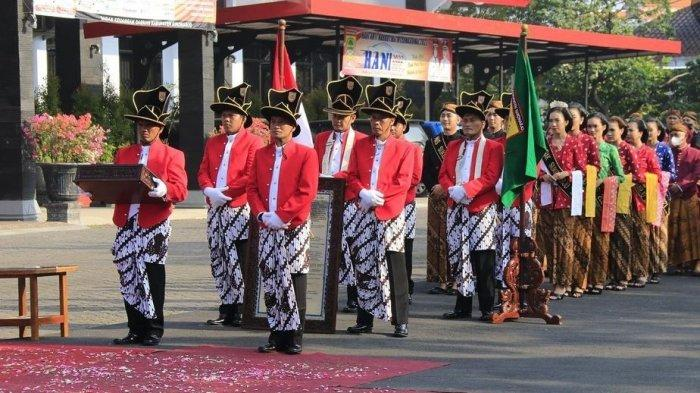
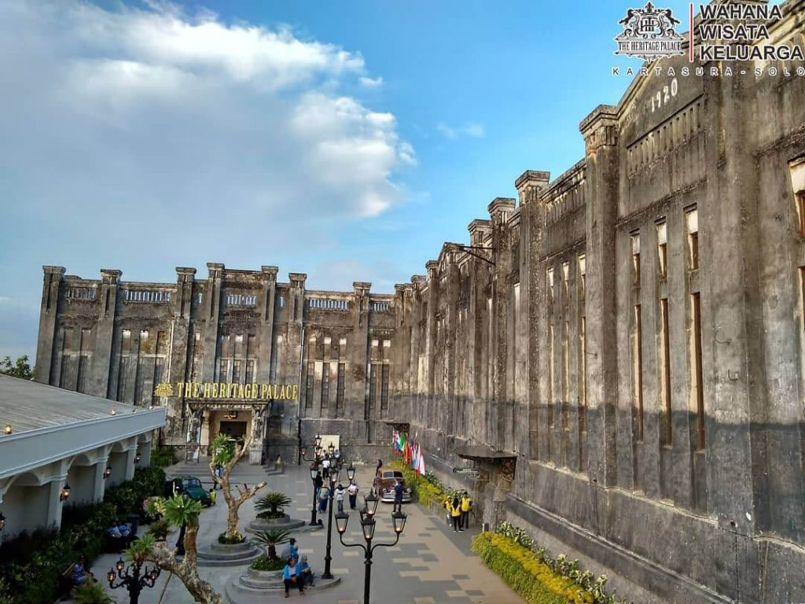
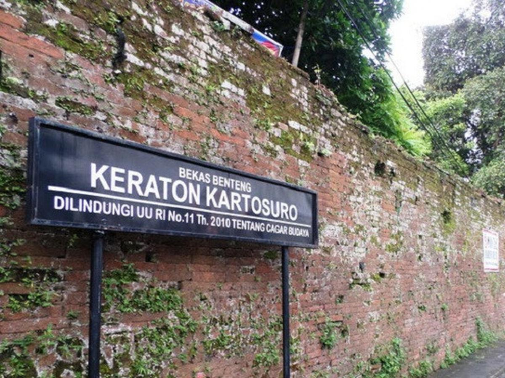

Sejarah

Masa Pra-Kemerdekaan
Pasca Perang Jawa (1825-1830), pemerintah Hindia Belanda makin memperketat keamanan untuk mencegah terulangnya pemberontakan. Kondisi masyarakat Jawa yang semakin miskin mendorong terjadinya tindak kejahatan (pidana) di berbagai
tempat. Menghadapi hal itu pemerintah kolonial menekan raja Surakarta dan Yogyakarta agar menerapkan hukum secara tegas. Salah satunya dengan membentuk lembaga hukum yang dilengkapi dengan berbagai pendukung. Di Kasunanan Surakarta
dibentuk lembaga Pradata Gedhe, yakni pengadilan kerajaan yang menjadi pusat penyelesaian semua perkara. Lembaga ini dipimpin oleh Raden Adipati (Patih) di bawah pengawasan Residen Surakarta. Dalam pelaksanaannya, Pradata Gedhe
mengalami kesulitan karena volume perkara yang sangat besar. Sunan Pakubuwono dan Residen Surakarta memandang perlu melimpahkan sebagian perkara kepada pemerintah daerah. Mereka sepakat membentuk pengadilan di tingkat kabupaten
yang diberi nama Pradata Kabupaten
Pada tanggal 16 Februari 1874, Sunan Pakubuwono IX dan Residen Surakarta, Keucheneus, membuat perjanjian pembentukan Pradata Kabupaten untuk wilayah Klaten, Boyolali, Ampel, Kartasura, Sragen dan Larangan. Surat perjanjian tersebut
disahkan pada hari Kamis tanggal 7 Mei 1874, Staatsblad nomor 209. Pada Bab I surat perjanjian, tertulis sebagai berikut
Ing Kabupaten Klaten, Ampel, Boyolali, Kartasura lan Sragen, apadene ing Kawedanan Larangan kadodokan pangadilan ingaranan Pradata Kabupaten. Kawedanan Larangan saikiki kadadekake kabupaten ingaranan Kabupaten Sukoharjo.
(Di Kabupaten Klaten, Ampel, Boyolali, Kartasura dan Sragen, dan juga Kawedanan Larangan dibentuk pengadilan yang disebut Pradata Kabupaten. Kawedanan Larangan sekarang dijadikan kabupaten dengan nama Kabupaten Sukoharjo).
Berdasarkan surat perjanjian tersebut sekarang ditetapkan bahwa Kamis, 7 Mei 1874 menjadi tanggal berdirinya Kabupaten Sukoharjo, yang sebelum itu bernama Kawedanan Larangan. Pada era kemerdekaan atau Pemerintahan Hari Lahir
Kabupaten Sukoharjo dengan adanya Penetapan Pemerintah No.16/SD, tepatnya pada hari / tanggal Senin Pon, 15 Juli 1946 dan juga adanya pembentukan Pemerintah Daerah di karesidenan Surakarta, pada Minggu Wage, 16 Juni 1946.
Geografis
Bengawan Solo membelah kabupaten ini menjadi dua bagian: Bagian utara pada umumnya merupakan dataran rendah dan bergelombang, sedang bagian selatan dataran tinggi dan pegunungan.
Sebagian daerah di perbatasan utara merupakan daerah perkembangan Kota Surakarta, mencakup kawasan Grogol dan Kartasura. Kartasura merupakan persimpangan jalur Surabaya-Surakarta-Jogja dengan Surakarta-Semarang. Kabupaten Sukoharjo
dilintasi jalur kereta api Surakarta-Wonogiri, yang dioperasikan kembali pada tahun 2004 setelah selama puluhan tahun tidak difungsikan.
Tempat Wisata
Terdapat banyak tempat wisata yang terdapat di Kabupaten Sukoharjo
The Heritage Palace

Sebelumnya, The Heritage Palace merupakan bekas pabrik gula Gembongan Kartasura Sukoharjo yang didirikan Belanda pada 1892. Kemudian direvitalisasi
menjadi museum angkut yang keren. Selain tempat nongkrong, di museum angkut ini juga terdapat berbagai macam mobil antik yang bisa menjadi spot untuk
berswafoto. Menariknya, Museum Angkut ini memiliki background bangunan tua yang instagramable.
Sejak dibuka pada 9 Juni 2018, kawasan ini menjadi objek wisata alternatif untuk wisatawan. Kartasura sendiri merupakan kecamatan yang masuk dalam
wilayah Kabupaten Sukoharjo. Di sini terdapat museum 3D Trick Art & Omah Kwalik, Museum Transportasi, Museum Industri, Garden Retro Paradise,
Convention Hall, Kids Town & Food Street. Untuk masuk di The Heritage Palace, Anda harus membeli tiket terusan Rp55.000. The Heritage Palace bisa
ditempuh dari berbagai rute. Jika dari Yogyakarta, Anda dapat menggunakan moda transportasi Pramexs dan turun di Stasiun Purwosari. Kemudian
melanjutkan naik taksi dengan waktu tempuh 15 menit
Kraton Kartasura

Keraton Kartasura (bahasa Jawa: ꦏꦫꦠꦺꦴꦤ꧀ꦏꦂꦡꦯꦹꦫ, translit. karaton Kartasura) adalah bekas keraton dan ibu kota Kesultanan Mataram pada tahun 1680-1745, setelah Keraton Plered.
Keraton ini didirikan oleh Amangkurat II pada tahun 1680, karena Keraton Plered saat itu telah diduduki Pangeran Puger yang ditugasi mempertahankan Plered oleh Amangkurat I, ketika terjadi pemberontakan Trunajaya. Pangeran Puger akhirnya dapat dibujuk untuk bergabung ke Kartasura dan mengakui kedaulatan kakaknya sebagai Amangkurat II.
Bekas Keraton Kartasura sekarang terletak di wilayah administratif Kabupaten Sukoharjo, di daerah yang kini disebut Kecamatan Kartasura. Peninggalan yang masih tersisa dari Keraton Kartasura hingga saat ini adalah sebagian dinding cepuri, baluwarti, taman keraton (Gunung Kunci), gedong piring, gedong obat, dalem pangeran, dan toponim yang merupakan komponen kota Kartasura di masa lalu.
Beberapa toponim tersebut antara lain kemasan (pengrajin emas), gerjen (tukang jahit), sayangan (kerajinan tembaga), kunden (kerajinan gerabah), pandean (tukang besi), jagalan (tukang jagal hewan), ngabean (pangeran Ngabehi), singapuran (pangeran Singapura), mangkubumen (pangeran Mangkubumi), purbayan (pangeran Purbaya)